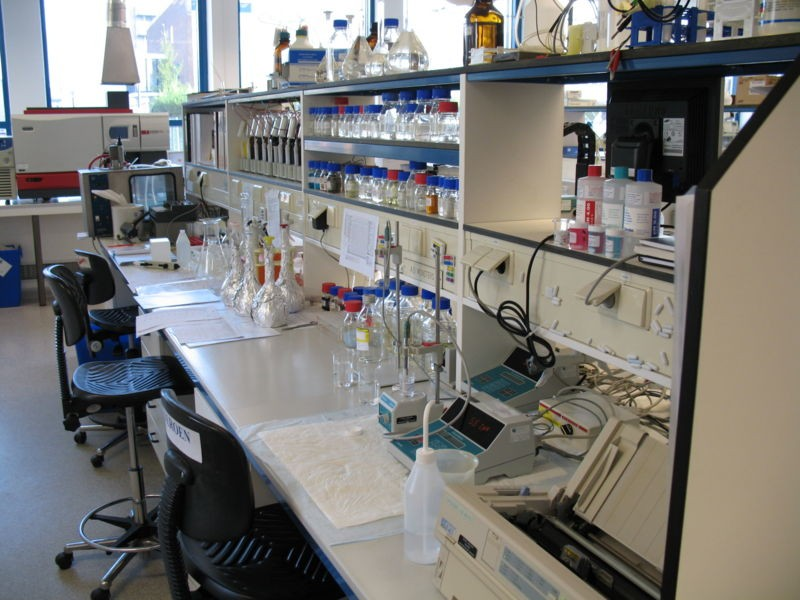

Grunt

Jonathan A. Epstein

What is it
JavaScript Task Runner
Why do I care
Automation Rocks!
The Grunt community is sweet!
First Grunt example:
This Presentation!
Some common tasks
- Improving code quality
- Optimizing assets
- Code testing
- Continuous delivery automation
- Serving assets
- Automating development
Under the covers
- Node running JS
- Open source
- Uses modules so it can be extended + customized
Popular plugins
Lab time

Racer task 1:
Get Node and Grunt setup
You need Node > 0.10.20
You can check with
node --version
If you do not have Node, you can install it by going to http://nodejs.org/ and clicking 'Install'.
Check your install with
node --version
Now install npm global dependencies with
npm install -g grunt-cli
Install the live reload browser extension (optional)
Racer task 2:
Get the racer project setup
Get the project via
git clone https://github.com/jinnovate/nh_node_grunt.git
cd nh_node_grunt
Go to basic-pre-grunt to see the project pre Grunt.
Then head over to basic-post-grunt
To pull down the npm dependencies, run
npm install
You can see all tasks and check your setup with
grunt --help
Racer task 3:
Run tasks
Development mode with auto reload
grunt dev
Create a version for release
grunt release
Racer task 4:
Add a new task
- Let's minify the css
grunt-contrib-cssmin
I already added
cssminto the package.json
cssmin: {
options: {
report: 'min'
},
css: {
files: {
'<%= distDir %>/main.css': '<%= distDir %>/main.css'
}
}
},
- Now add it to
releasetask
If you are having problems:
The final GruntFile.js is called gruntFile.js.final
Yeoman Mobile Generator task 1:
Run some Grunt commands
Setup
cd mobile-example
gem install compass # if this fails, pair up and install ruby later :)
npm install
Running
Create a build of the project
grunt build
Serve the files
grunt serve